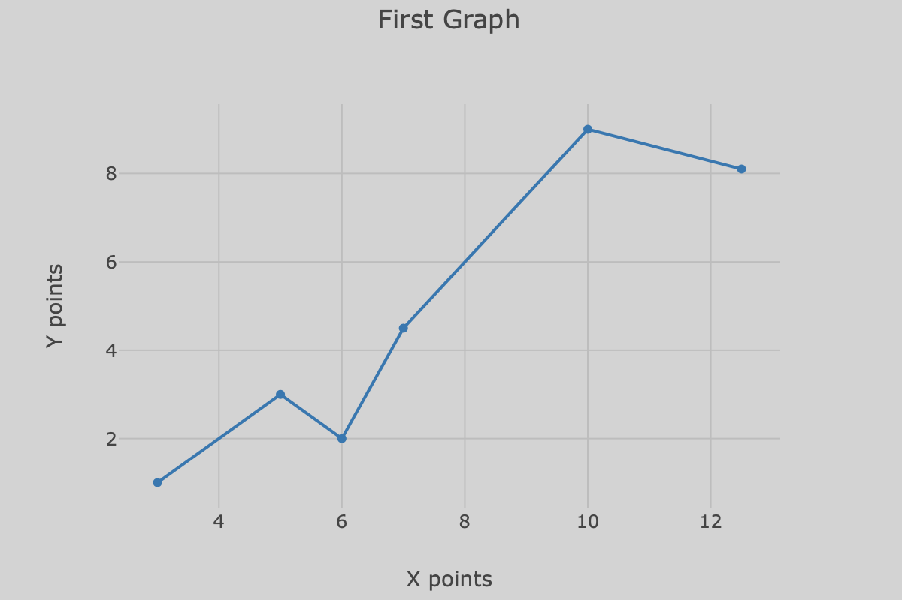
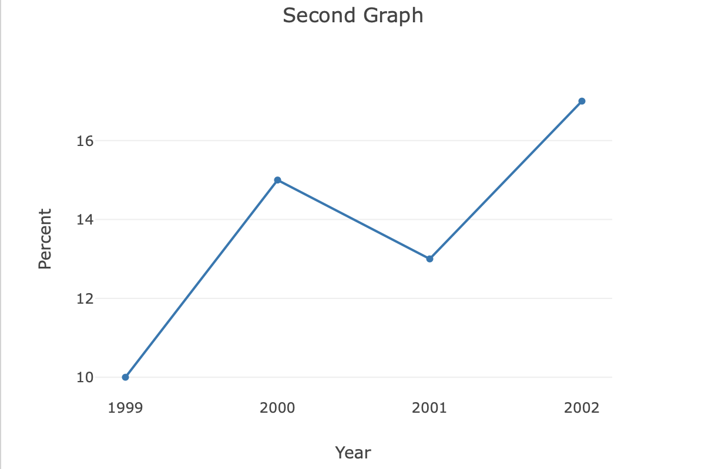

Plotly is an open-source graphing library for JavaScript and other programming languages. Two basic examples are given below. The first graph uses a custom background color to match the web page. The second graph turns off some of the grid lines and uses the default background color.


<!-- index.html -->
<!DOCTYPE html>
<html>
<head>
<meta charset="utf-8">
<meta name="viewport" content="width=device-width, initial-scale=1">
<script src="https://cdn.plot.ly/plotly-latest.min.js"></script>
<title>Example</title>
<style>
body {
background-color: lightgrey;
margin: 40px auto;
max-width: 800px;
}
</style>
</head>
<body>
<h1>Plotly examples</h1>
<div id="graph1" style="width:600px;"></div>
<div id="graph2" style="width:600px;"></div>
<script src="app.js"></script>
</body>
</html>
// app.js
// First graph
const data1 = [{
x: [3, 5, 6, 7, 10, 12.5],
y: [1, 3, 2, 4.5, 9, 8.1],
type: 'line'
}];
const layout = {
title: 'First Graph',
xaxis: {
title: 'X points',
gridcolor: 'rgb(189, 189, 189)',
},
yaxis: {
title: 'Y points',
gridcolor: 'rgb(189, 189, 189)',
zeroline: false
},
paper_bgcolor: 'rgba(0,0,0,0)',
plot_bgcolor: 'rgba(0,0,0,0)'
};
Plotly.newPlot("graph1", data1, layout)
// Second graph
const data2 = [{
x: [1999, 2000, 2001, 2002],
y: [10, 15, 13, 17],
type: 'scatter'
}];
const layout2 = {
title: 'Second Graph',
xaxis: {
title: 'Year',
showgrid: false,
zeroline: false
},
yaxis: {
title: 'Percent',
showline: false
}
};
Plotly.newPlot("graph2", data2, layout2);
Gavin Wiggins © 2025
Made on a Mac with Genja. Hosted on GitHub Pages.